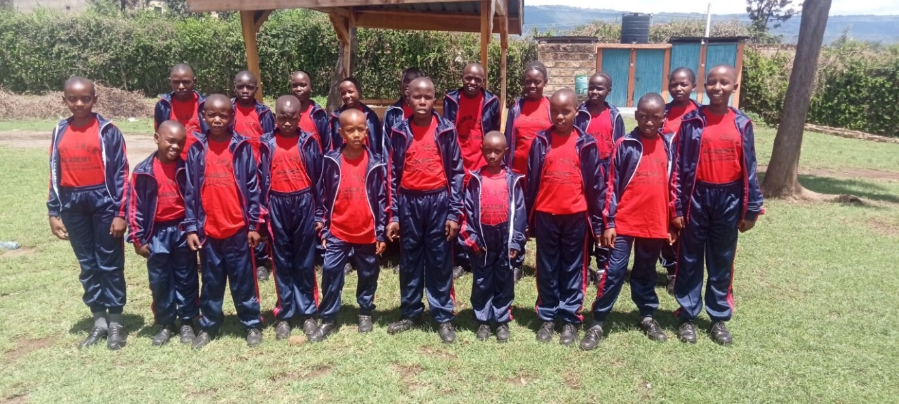
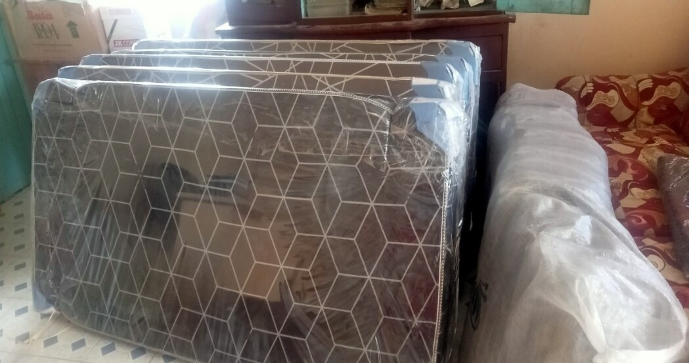
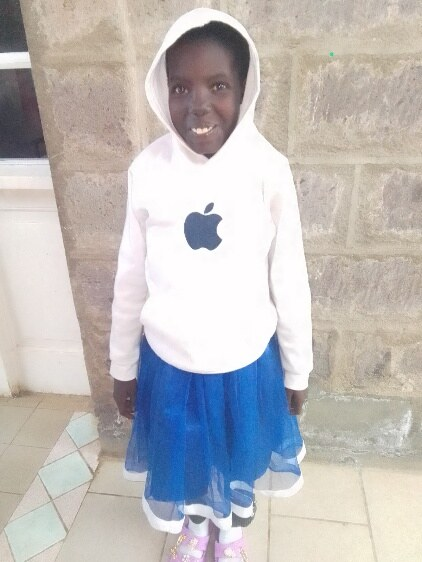
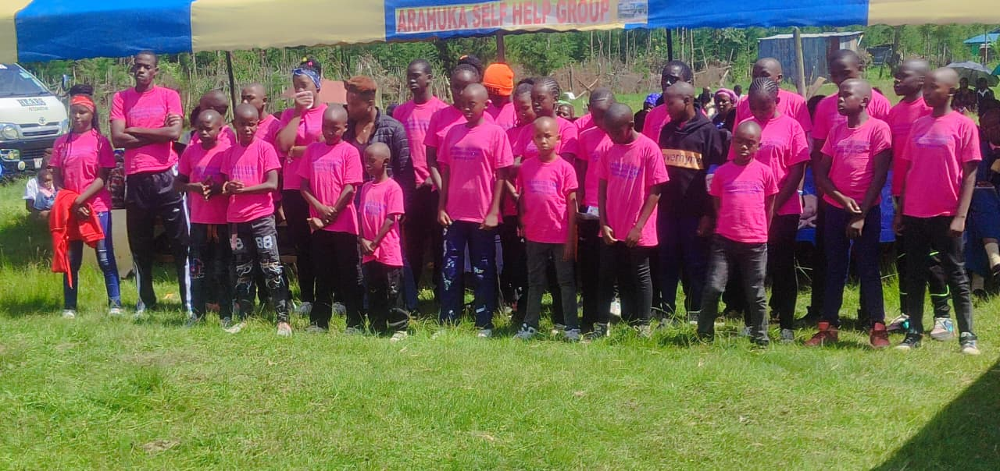
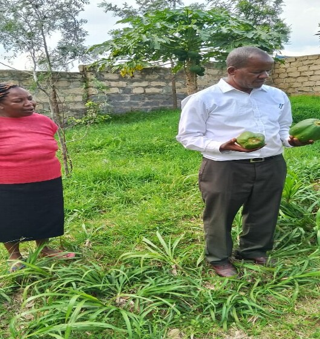
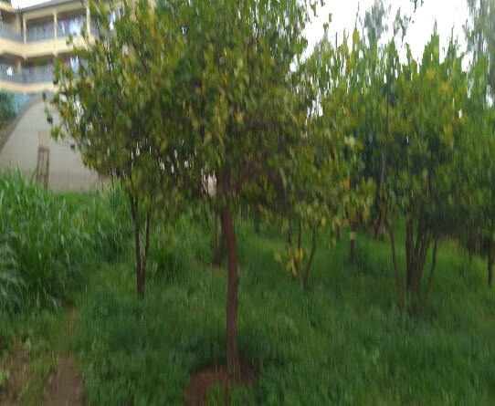
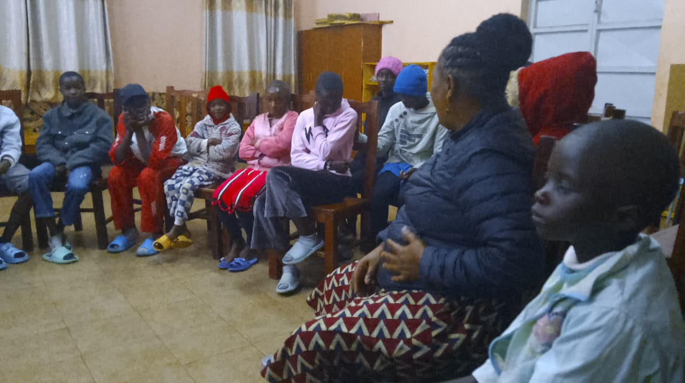

Monthly Update

Beat the Drum Children's Home remains deeply committed to caring for every child entrusted to us. We take their lives very seriously, which involves access to proper treatment, emotional support, education, food, and essential resources that enable them to thrive and enjoy dignified lives. Our care also extends to strengthening and supporting caregivers, while creating a stable, loving, and secure environment for every child. In the month of April, two staff members attended a three-day staff seminar which now helps them to be good planners.

Currently, the home cares for 31 children, supported by a dedicated team of caregivers and home parents who work tirelessly together to nurture and protect them. We intentionally seek to serve the children with love, compassion, and dignity as an expression of our service to God.
We are grateful that all our children continue attending school faithfully and are progressing well academically and socially. Through your support from friends like you and others, the children have access to school fees, uniforms, learning materials, and a stable environment that allows them to focus on their education with confidence and hope for a brighter future. We continue encouraging discipline, responsibility, and spiritual growth among them as they pursue their studies.
This term, each of them got a new pair of sport gear. We were also able to buy new mattresses to replace worn-out ones, which has given our children a lot of joy.
The health of the children has also remained stable and well monitored. Regular medical check-ups, proper nutrition, and close caregiver supervision have greatly contributed to their wellbeing. We are thankful that most of the children are in good health and continue to grow happily within the family environment of the home. Support received has enabled us to provide balanced meals consistently, ensuring that the children remain well fed and healthy. It is always encouraging to see the children happy, energetic, and thriving.
In Loving Memory
Called home · 10 May 2026

In the month of May, we experienced one of the most difficult moments in the history of our home when Gladys, our beloved child who had lived with us for nine years, went to be with the Lord on 10th May 2026. She was buried on 19th May, 2026.
Gladys was deeply loved by both the children and staff, and her passing brought immense sorrow to our entire GOA family. It was truly one of the lowest moments we have faced as a home. We continue supporting the children emotionally as they process the loss and heal together as a family.
She had been in and out of hospital since 2024, when it was medically discovered that she had diabetes and had to undergo dialysis twice a week. We thank God for the opportunity to serve her. We thank God for your support in this journey — it was never in vain.

Beat the Drum Children's Home continues to strengthen its sustainability efforts through the home farm, which has become an important source of food and support for the children. The farm includes a variety of vegetables, different fruit trees, and dairy farming, all of which contribute to improving nutrition and reducing food costs within the home.
Recently, the farm recorded a successful harvest of 78 bales of hay, a significant milestone that will greatly support livestock feeding and farm sustainability. These activities not only provide practical support to the home but also create a healthy and productive environment for the children.



At the beginning of this school term, the home organized a counselling and mentorship session aimed at helping the children relate well with one another, build confidence, and remain focused on excelling in their studies. The session addressed emotional well-being, positive behavior, personal growth, and the importance of education in shaping their future. It was facilitated by the Compassion Director together with two staff members from the head office, whose encouragement and guidance greatly impacted the children and staff alike.
As we reflect on all that has been achieved, we recognize that none of it would have been possible without your support and faithful partnership. Your generosity continues to bring hope, stability, care, and opportunity to children who need it most, you are part of every smile.
On behalf of the management, staff, and all the children at BTD, please accept our deepest gratitude. We sincerely thank you for your continued love, generosity, and commitment toward supporting the children under our care. Your support has remained a great blessing to the home and has continued to transform the lives of many vulnerable children in a meaningful way. Your kindness continues to make a lasting impact, and we pray that God richly blesses you for your compassion and support.
Your generosity sustains these children's education, healthcare, and daily needs.
Give NowPlease select "Beat the Drum (Glory Outreach Assembly)" from the dropdown menu.